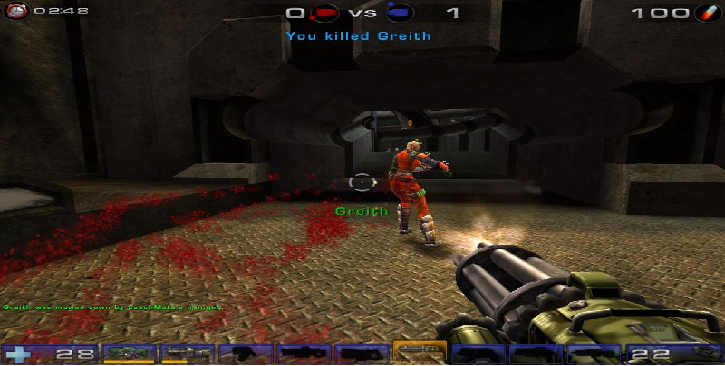
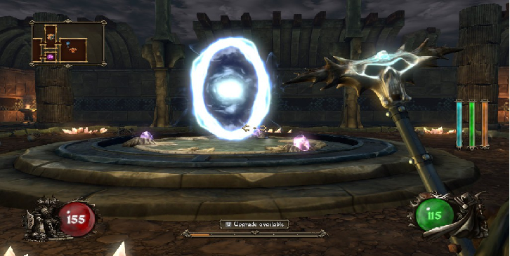

What is a First Person Shooter??
|
|
|
First person shooters take the player "behind the eyes" of the protoganist, and in some cases, the antagonist.

Most first person shooters involve guns:

In other cases, the player is given the luxury of wielding staves of power:
